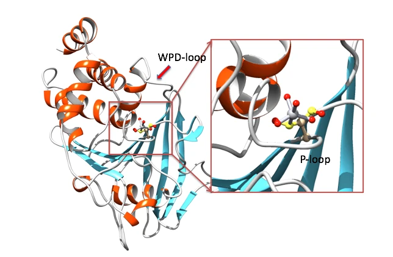
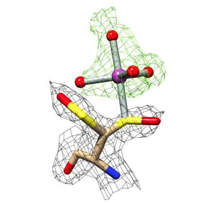
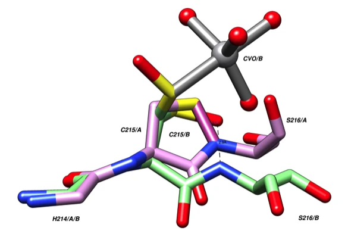

Context
Protein tyrosine phosphatase 1B (PTP1B) is a therapeutic target in obesity and type 2 diabetes. In collaboration with the organic chemistry lab, the team studied a vanadium complex that was being developed as an inhibitor.
The aqueous decay of the complex produced crystals of PTP1B that revealed how the catalytic cysteine can be modified — and gave the project an unexpected structural story.
What I did
- Crystallized PTP1B in the presence of VO(acac)2 and collected X-ray diffraction data.
- Determined structures of the vanadate-modified catalytic cysteine and compared oxidation states.
- Analyzed the coordination geometry of the vanadium center and its interaction with the WPD loop.
- Connected the structural observations to the inhibition and redox behavior of the enzyme.
Key results
- Redox states
- 2+Compared in the active site
- Catalytic cysteine
- 1Vanadate modification visualised
- Therapeutic area
- T2DObesity and type 2 diabetes
- The structures visualise a vanadate modification of the catalytic cysteine.
- The active-site geometry reveals how the WPD loop and neighbouring residues accommodate the modified cysteine.
- The result adds missing structural detail to the redox chemistry of PTP1B inhibition.
Figures



Collaborators

Dr. Dali Liu
Principal Investigator
Loyola University Chicago

Dr. Wei-Tsung Lee
Medicinal chemistry collaborator
Loyola University Chicago

Dr. Boguslaw Nocek
Crystallography collaborator
Loyola University Chicago
Output
Source and disclosure. Adapted from Dr. Zheng's April 2024 research summary. Some structural details were part of thesis work and may not have a standalone publication.